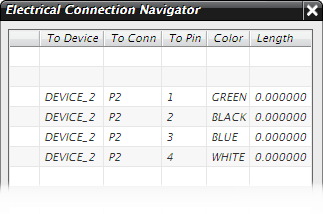

You need to see the colors that were assigned to these wires. You can do this in one of two ways. You can either switch the display format in the connection navigator to one that already has the Color column in it, such as UG/Harness or Full, or you can edit the currently displayed format by adding in the color column.
In the navigator background, right-click and choose Properties.
Click Edit Display Format.
You want to change the Simple display format as it is used in this part file.
In the Define Format dialog box, select Simple.
Click Edit to open the Format Settings dialog box.
You can see that in the Sort Order column, sort orders number 1 and 2 have already been applied. NX sorts by unique_id first, then by from_comp. You can have color sorted third.
You want the Color column to be placed between Sort Order and the Length column, and to be at least eight spaces wide.
Enter the following data:
|
Field Name |
= |
color |
|
Column Name |
= |
Color |
|
Column Order |
= |
8 |
|
Column Width |
= |
8 |
|
Sort Order |
= |
3 |
Click Insert/Replace.
NX slips this new column in between to_port and length.
to_conn To Conn to_port To Pin color Color length Length
Click OK twice.
In the Connection List Properties dialog box, 点击确定。
Scroll the Electrical Connection Navigator to the right end.
The Color column is placed between the To Pin and Length columns, and all the color names assigned to the four wires are now displayed.

|
Note |
No length values are assigned yet as no wires have been routed. |